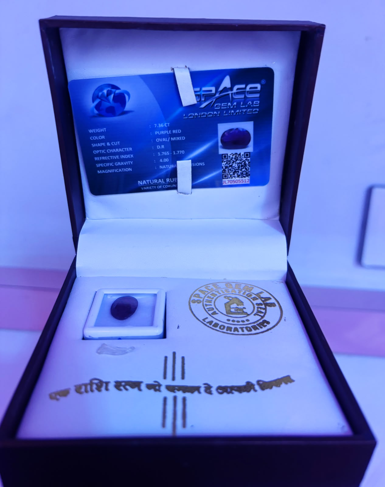
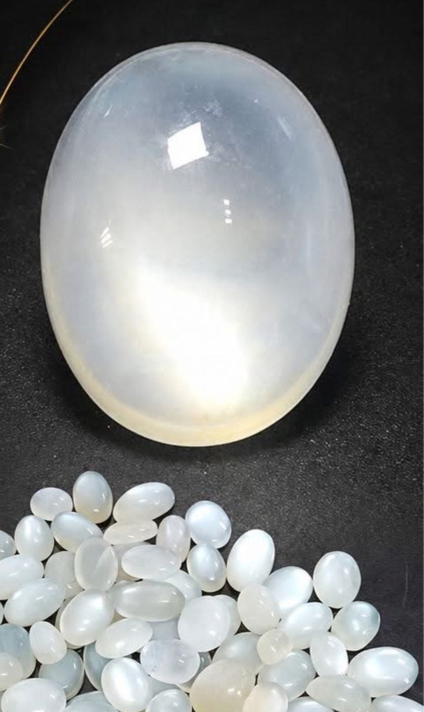
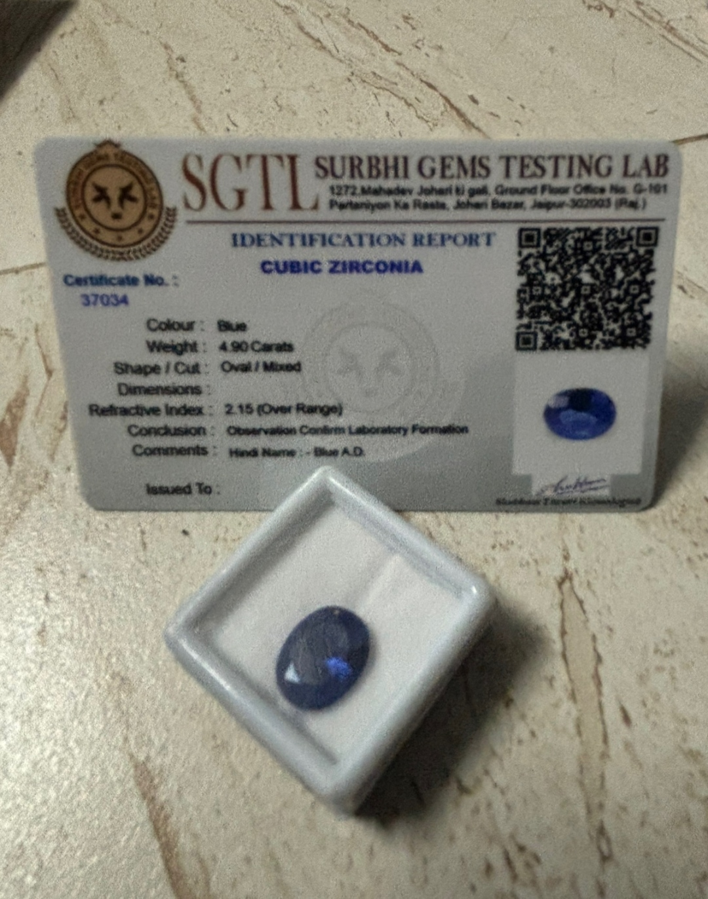
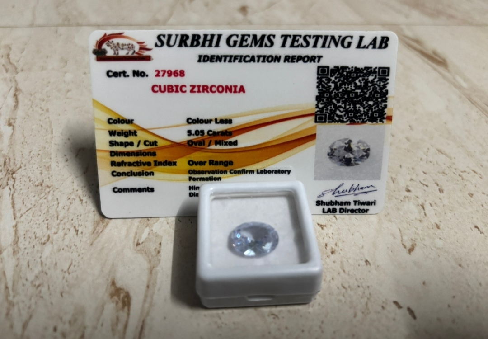
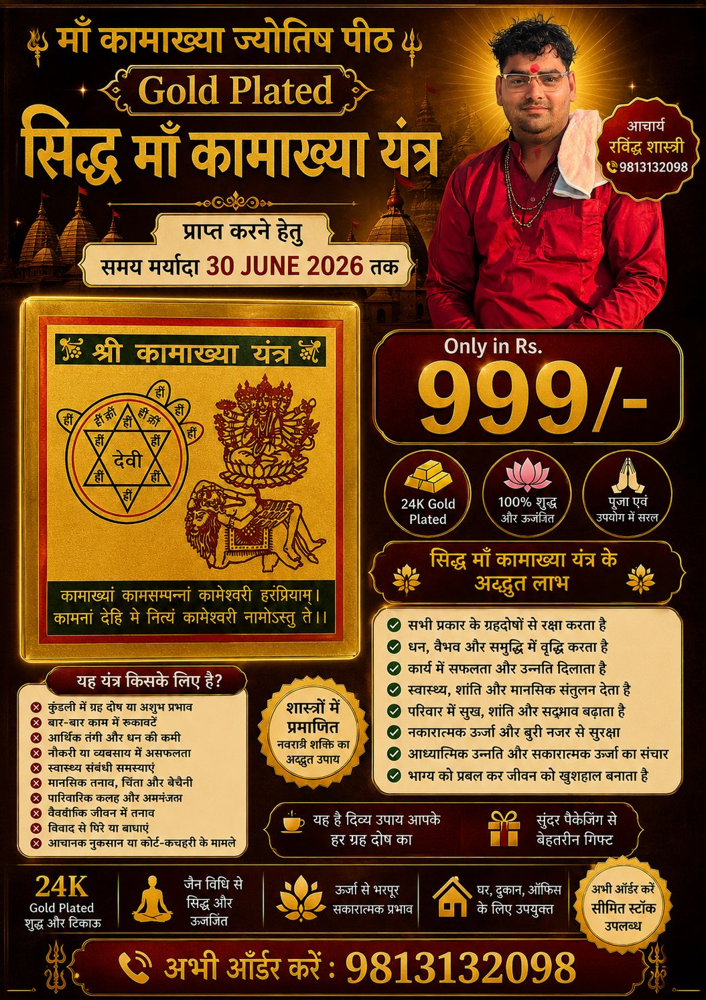
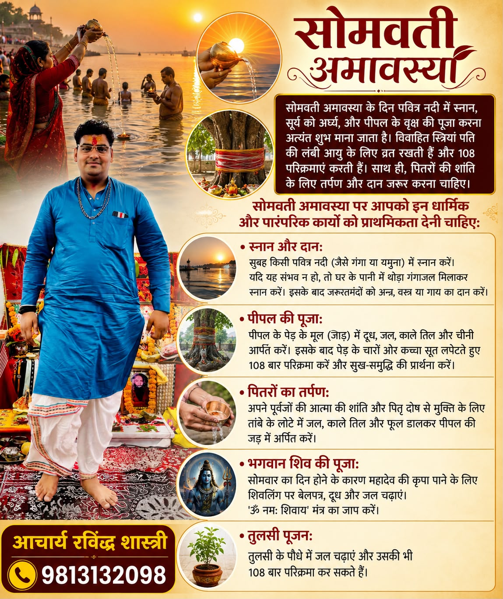
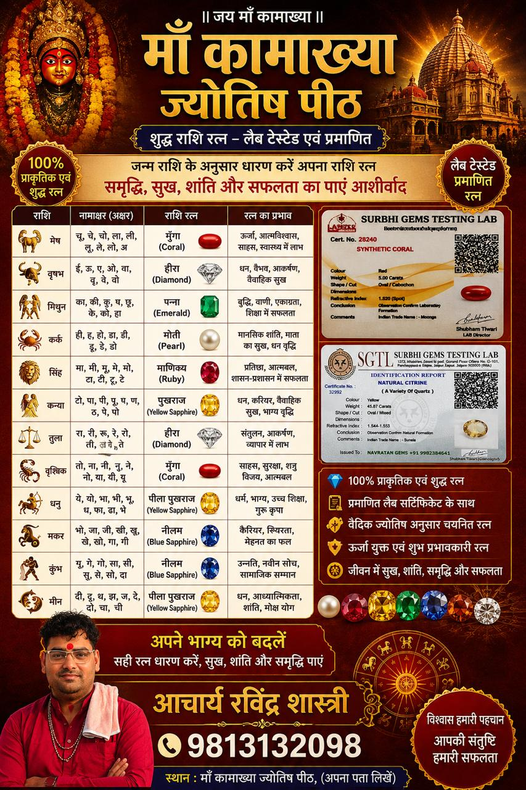
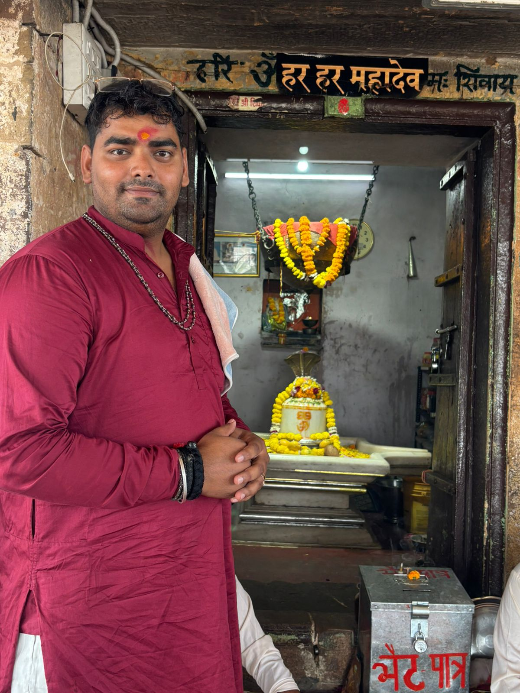
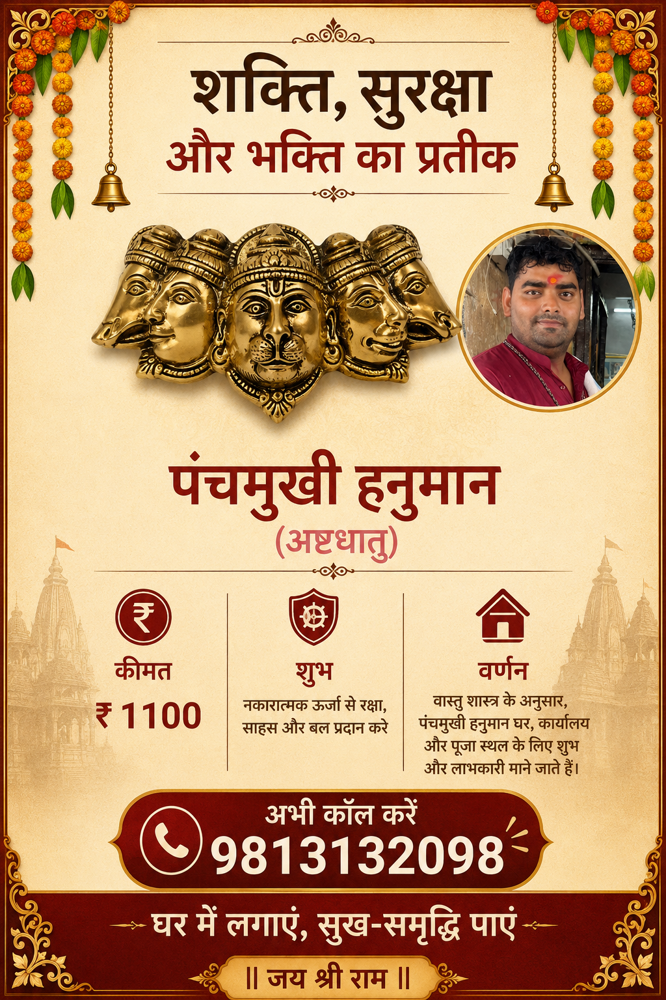

.gif)


.gif)
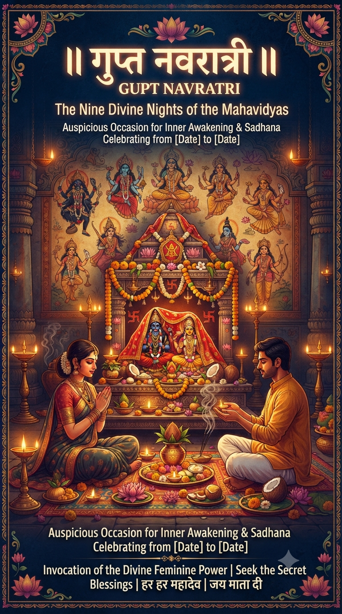
पूजा जितनी गुप्त होगी फल उतना ही अच्छा होगा: आचार्य रविंद्र शास्त्री कुड़ल सभी मनोकामनाओं की सिद्धि के लिए 15 जुलाई से होगा आषाढ़ माह के गुप्त नवरात्रि का प्रारम्भ हिंदू धर्म में नवरात्रि का विशेष महत्व है। हर साल में चार बार नवरात्रि का पर्व मनाया जाता है। आमतौर पर चैत्र और आश्विन मास में आने वाले नवरात्रि को तो सब जानते हैं, परंतु इनके अतिरिक्त भी विशेष कामनाओं की सिद्धि के लिए आषाढ़ और माघ माह के नवरात्रि होते हैं जिन्हें गुप्त नवरात्रि कहा जाता है। ज्योतिषाचार्य रविंद्र शास्त्री ने बताया कि इस बार आषाढ़ माह के गुप्त नवरात्रि का प्रारंभ 15 जुलाई से होगा। इसके बाद नवमी तिथि को इनका समापन होगा। इन नवरात्रि के दौरान चतुर्थी तिथि शुक्रवार को क्षय रहेगी और नवमी तिथि में वृद्धि रहेगी नवमी 22 और 23 जुलाई को रहेगी। इन नवरात्रों के दौरान मां दुर्गा के 10 महाविद्याओं मां काली, तारा देवी, षोडशी, भुवनेश्वरी, भैरवी, छिन्नमस्ता, धूमावती, बगलामुखी, मातंगी और कमला देवी की पूजा विधिवत रूप से पूजा व आराधना की जाती है। उन्होंने बताया कि गुप्त नवरात्रि में पूजा को गुप्त रखा जाता है, यानी किसी को बताया नहीं जाता है। साधना जितनी गुप्त होती है उसका फल उतना ही फलदाई और अधिक मिलता है। मान्यताओं के अनुसार गुप्त नवरात्रि में मां दुर्गा के साधनाकाल जप, तप, अनुष्ठान, साधना पूर्ण विधि गुप्त तरीके से करने से जीवन में आ पहले दिन कलश स्थापना का शुभ मुहूर्त आचार्य रविंद्र शास्त्री ने बताया कि नवरात्रि के पहले दिन शुभ मुहूर्त को ध्यान में रखते हुए कलश स्थापना की जाती है। घटस्थापना का शुभ समय सुबह 6:15 बजे से सुबह 9:05 बजे तक रहेगा। अगर इस समय नहीं कर पाए तो इसके बाद शुभ का चौघड़िया आएगा। सुबह 10:50 से दोपहर 12:31 बजे तक रहेगा। 15 जुलाई को बुधवार होने के कारण अभिजीत मुहूर्त नहीं आएगा। रही सभी बाधा दूर हो जाती हैं और यंत्र, मंत्र, तंत्र की सभी बंदिशें कट जाती है। नौका पर सवार होकर आएगी माता नवरात्रि में माता दुर्गा के वाहन का विशेष महत्व होता है। वैसे तो माता का वाहन शेर है, परंतु नवरात्रि में माता का वाहन वार के हिसाब से होता है। बुधवार से शुरूआत होने पर माता नौका पर सवार होकर आती हैं। देवी भागवत पुराण के अनुसार, यह वाहन अच्छी वर्षा, समृद्धि और कृषि में उन्नति का प्रतीक है। कृषि लिए इसे विशेष रूप से शुभ माना जा रहा है। मान्यता है कि माता का नौका पर आगमन भक्तों के कष्ट दूर करने के साथ खुशहाली का संदेश देता है

*(1)* *सुन्दरकाण्ड का पाठ :~* ऐसी मान्यता है कि हनुमान जी से जुड़ा कोई भी मंत्र या पाठ अन्य किसी भी मंत्र से अधिक शक्तिशाली होता है। हनुमान जी अपने भक्तों को उनकी उपासना के फल में बल और शक्ति प्रदान करते हैं हम पवन पुत्र की प्रसन्नता के लिए सुंदरकांड संगीतमय करते हैं। *आचार्य रविंद्र शास्त्री* : *(2)* *सुन्दरकाण्ड के फायदे :~* लेकिन आज हम विशेष रूप से सुंदरकांड पाठ के महत्व और उससे मिलने वाले लाभ पर बात करेंगे। भक्तों द्वारा हनुमान जी को प्रसन्न करने के लिए अमूमन हनुमान चालीसा का पाठ किया जाता है। हनुमान चालीसा बड़े-बूढ़ों से लेकर बच्चों तक को जल्दी याद हो जाता है। : *(3)* *हनुमान चालीसा :~* लेकिन हनुमान चालीसा के अलावा यदि आप सुंदरकांड पाठ के लाभ जान लेंगे तो इसे रोजाना करना पसंद करेंगे। हिन्दू धर्म की प्रसिद्ध मान्यता के अनुसार सुंदरकांड का पाठ करने वाले भक्त की मनोकामना जल्द पूर्ण हो जाती है। : *(4)* *सुंदरकांड अध्याय :~* सुंदरकांड, गोस्वामी तुलसीदास द्वारा लिखी गई रामचरितमानस के सात अध्यायों में से पांचवा अध्याय है। रामचरित मानस के सभी अध्याय भगवान की भक्ति के लिए हैं, लेकिन सुंदरकांड का महत्व अधिक बताया गया है। : *(5)* *सुंदरकांड पाठ का महत्व :~* जहां एक ओर पूर्ण रामचरितमानस में भगवान के गुणों को दर्शाया गया है, उनकी महिमा बताई गई है लेकिन दूसरी ओर रामचरितमानस के सुंदरकांड की कथा सबसे अलग है। इसमें भगवान राम के गुणों की नहीं बल्कि उनके भक्त के गुणों और उसकी विजय की बात बताई गई है। : *(6)* *हनुमान पाठ के लाभ :~* सुंदरकांड का पाठ करने वाले भक्त को हनुमान जी बल प्रदान करते हैं। उसके आसपास भी नकारात्मक शक्ति भटक नहीं सकती, इस तरह की शक्ति प्राप्त करता है वह भक्त। यह भी माना जाता है कि जब भक्त का आत्मविश्वास कम हो जाए या जीवन में कोई काम ना बन रहा हो, तो सुंदरकांड का पाठ करने से सभी काम अपने आप ही बनने लगते हैं। : *(7)* *शास्त्रीय मान्यताएं :~* किंतु केवल शास्त्रीय मान्यताओं ने ही नहीं, विज्ञान ने भी सुंदरकांड के पाठ के महत्व को समझाया है। विभिन्न मनोवैज्ञानिकों की राय में सुंदरकांड का पाठ भक्त के आत्मविश्वास और इच्छाशक्ति को बढ़ाता है। : *(8)* *सुंदराकांड पाठ का अर्थ :~* इस पाठ की एक-एक पंक्ति और उससे जुड़ा अर्थ, भक्त को जीवन में कभी ना हार मानने की सीख प्रदान करता है। मनोवैज्ञानिकों के अनुसार किसी बड़ी परीक्षा में सफल होना हो तो परीक्षा से पहले सुंदरकांड का पाठ अवश्य करना चाहिए। : *(9)* *सुंदराकांड पाठ का महत्व :~* यदि संभव हो तो विद्यार्थियों को सुंदरकांड का पाठ करना चाहिए। यह पाठ उनके भीतर आत्मविश्वास को जगाएगा और उन्हें सफलता के और करीब ले जाएगा। : *(10)* *सफलता के सूत्र :~* आपको शायद मालूम ना हो, लेकिन यदि आप सुंदरकांड के पाठ की पंक्तियों के अर्थ जानेंगे तो आपको यह मालूम होगा कि इसमें जीवन की सफलता के सूत्र भी बताए गए हैं। : *(11)* *सफल जीवन के मंत्र :~* यह सूत्र यदि व्यक्ति अपने जीवन पर अमल कर ले तो उसे सफल होने से कोई नहीं रोक सकता। इसलिए यह राय दी जाती है कि यदि रामचरित्मानस का पूर्ण पाठ कोई ना कर पाए, तो कम से कम सुंदरकांड का पाठ अवश्य कर लेना चाहिए। : *(12)* *इस समय करें सुंदराकांड का पाठ :~* यहां तक कि यह भी कहा जाता है कि जब घर पर रामायण पाठ रखा जाए तो उस पूर्ण पाठ में से सुंदरकांड का पाठ घर के किसी सदस्य को ही करना चाहिए। इससे घर में सकारात्मक शक्तियों का प्रवाह होता है। : *(13)* *ज्योतिष के लाभ :~* ज्योतिष के नजरिये से यदि देखा जाए तो यह पाठ घर के सभी सदस्यों के ऊपर मंडरा रहे अशुभ ग्रहों छुटकारा दिलाता है। यदि स्वयं यह पाठ ना कर सकें, तो कम से कम घर के सभी सदस्यों को यह पाठ सुनना जरूर चाहिए। अशुभ ग्रहों का दोष दूर करने में लाभकारी है सुंदरकांड का पाठ। : *(14)* *आत्मा की शुद्धि :~* सुंदरकांड पाठ करने से आत्मिक लाभ मिलता है। आत्मा शुद्ध होती है। सुंदरकांड का पाठ करने से आत्मा परमात्मा से मिलने के लिए तैयार होती है। मनुष्य इस जीवन रूपी दुनिया में जो करना आया है वही करता है। और सुंदर कांड पाठ करने से आत्मा की शुद्धि होती है। : *(15)* *रोगों को दूर भगाए :~* सुंदरकांड का पाठ एक तीर से कई निशाने लगाने का नाम है। पाठ करने से रोग दूर रहते हैं। इससे आपकी दरिद्रता खत्म होती है। : *(16)* *मानसिक सुख :~* अगर कोई व्यक्ति लगातार सुंदरकांड का पाठ करता है तो उसे अनेक लाभ मिलते हैं। सुंदरकांड पाठ निरंतर करने से मानसिक सुख शांति प्राप्त होती है। : *(17)* *अनहोनी दूर करे :~* अगर आप किसी ऐसी जगह पर रहते हैं जो सूनसान है। और आपको हमेशा किसी अनहोनी का डर रहता है। तो आप सुंदरकांड का पाठ करें। इससे आपके पास आने वाली हर समस्या दूर रहती है। : *(18)* *बच्चे आदर ना करें तो* *सुंदरकांड का पाठ :~* अगर आपके बच्चे आपकी सुनते नहीं और बड़ों का आदर नहीं करते हैं तो आप अपने बच्चों को सुंदरकांड का पाठ करने के लिए प्रेरित कर सकते हैं। अगर वे अपने संस्कारों को भूल गए हैं तो आप बच्चों को सुंदरकांड का पाठ बच्चों से करवा सकते हैं। : *(19)* *कर्ज से छुटकारा :~* अगर आप पर बहुत सारा कर्ज हो गया है तो आपको सुंदरकांड का पाठ करना चाहिए। सुंदरकांड का पाठ कर्ज से मुक्ति दिलाता है। : *(20)* *मन के भय से मुक्ति :~* अगर आपको रात को डर लगता है और बुरे सपने आते हैं तो आपको सुंदरकांड पाठ करना चाहिए। जिस तरह से हनुमान चालिसा का पाठ करने से मन के भय से मुक्ति मिलती है। ठीक उसी तरह से सुंदरकांड का पाठ करने से मन के भय से मुक्ति मिलती है। : *(21)* *हनुमान की कृपा :~* सुंदरकांड का पाठ करने से हनुमान की कृपा बनी रहती है। सिर्फ हनुमान ही नहीं भगवान राम की भी कृपा बनी रहती है। यदि आप दोनों भगवान की कृपा पाना चाहते हैं तो सुंदरकांड का पाठ करें। : *(22)* *गृह क्लेश से छुटकारा :~* सुंदरकांड का पाठ करने से गृह क्लेश से छुटकारा मिलता है। इसका पाठ करने से सकारात्मक शक्ति घऱ में आती है। जिससे घऱ में पैदा होने वाली नकारात्मक शक्तियों को से छुटकारा मिलता है। : *(23)* *विद्यार्थियों के लिए लाभदायक :~* यदि विद्यार्थी सुंदरकांड का पाठ करते हैं तो उन्हें उनके छात्र जीवन में सफलता मिलती है। उनका पढ़ाई में मन लगता है। और परीक्षा में अंक ठीक आते हैं। इसलिए विद्यार्थियों को सुंदरकांड का पाठ अवश्य करना चाहिए। : *(24)* *घऱ में सकारात्मक शक्तियों का वास :~* ऐसा माना जाता है कि सुंदरकांड का पाठ करने से घर में माहौल सकारात्मक और प्रेम पूर्वक रहता है। यदि सुंदरकांड का पाठ घऱ के ही किसी सदस्य द्वारा किया जाता है तो और भी अधिक फायदेमंद होता है। : *(25)* *अशुभ ग्रहों को दूर करे :~* सुंदरकांड का पाठ करने से अशुभ ग्रहों की स्थिति को शुभ बनाया जा सकता है। इसलिए नियमित सुंदरकांड का पाठ करना चाहिए। : *(26)* *कभी हार ना मानना :~* जीवन में ऐसे कई पड़ाव आता हैं जब हम अपना बल हार जाते हैं। मन दुखी हो जाता है। तो ऐसे में आपको हार नहीं मानना चाहिए। क्योंकि सुंदरकांड का पाठ आपको जीवन में कभी हार ना मानने की शक्ति देता है। 🙏🙏जय श्री सियाराम🙏🙏
.jpg)
रत्न क्या है? रत्न कैलकुलेटर से जानें कौन-सा रत्न आपको पहनना चाहिएरत्न एक प्रकार के बहुमूल्य पत्थर होते हैं जो बहुत प्रभावशाली और आकर्षक होते हैं। रत्न अपने ख़ास गुणों के कारण आभूषण निर्माण, फैशन और ज्योतिष आदि जैसे कार्यो में प्रयोग में लाये जाते हैं। ज्योतिष शास्त्र के अनुसार रत्न में दैवीय ऊर्जा समाहित होती है, जिनसे मनुष्य जीवन का कल्याण होता है। रत्न को प्रायः "रत्ती" के द्वारा इंगित किया जाता है। प्राचीन काल से रत्नों का उपयोग आध्यात्मिक क्रियाकलापों और उपचार के लिए किया जाता रहा है। रत्न शक्तियों का भण्डार होता हैं, जो शरीर में स्पर्श के माध्यम से प्रवेश करता है। रत्न सकारात्मक या नकारात्मक रूप से धारण करने वाले पर असर दिखा सकता है– यह उपयोग में लाये जाने के तरीके पर निर्भर करता है। सभी रत्नों में अलग-अलग चुम्बकीय शक्तियाँ होती हैं। इनमें से कई रत्न उपचार के दृष्टिकोण से हमारे लिए बहुत लाभदायक हैं। क्यों धारण करते हैं रत्न? वैदिक ज्योतिष के अनुसार देखें तो हर ग्रह का संबंध किसी न किसी रत्न से होता है और वैसे ही हर रत्न का किसी न किसी ग्रह से जुड़ा होता है। जैसे सूर्य का संबंध माणिक्य रत्न से, चन्द्रमा का मोती से, बुध का पन्ना से, गुरु का पुखराज से, शुक्र का हीरा से, शनि का नीलम से, राहू का गोमेद से और केतु का लहसुनिया से। किसी भी मनुष्य के जीवन में भाग्य परिवर्तन जन्मपत्री में ग्रहों की दशा के अनुसार आता रहता है। अशुभ ग्रहों को शुभ बनाना या फिर शुभ ग्रहों को अपने लिए और अधिक शुभ बनाने की मनुष्य की हमेशा ही चेष्टा रही है जिसके लिए वो अनेकों उपाय करता रहता है, जैसे कि मंत्रों का जाप, दान-पुण्य, स्नान, रत्न धारण, यंत्र धारण, देव-देवी दर्शन आदि। इन सब में रत्न धारण करना एक महत्वपूर्ण एवं असरदार उपाय माना जाता है। रत्न आभूषणों के रूप में शरीर की शोभा बढ़ाते हैं, साथ ही अपनी दैवीय शक्ति के प्रभाव से रोगों का निवारण भी करते हैं। कितने प्रकार के होते हैं रत्न? जिस प्रकार से सात ग्रह ,सात रंग, संगीत के सात सुर, सात दिन, योग में सात चक्र, शरीर में सात ग्रंथियां होती हैं, उसी प्रकार सात महत्वपूर्ण रत्न भी होते हैं, जिन्हें हम माणिक्य, मोती, मूंगा, पन्ना, पुखराज, हीरा और नीलम के नाम से जानते हैं। इसके अलावा गोमेद और लहसुनिया 2 और रत्न होते हैं जो बेहद प्रचलित हैं और इनका भी बहुत महत्व है। ये सातों रत्न 12 राशियों के स्वामी ग्रहों के राशि रत्न भी होते हैं। आईये जानते हैं कि कौन सी राशि के लिए कौन सा रत्न उपयुक्त है। माणिक्य- माणिक्य(Rubies) रत्न सूर्य ग्रह के लिए होता है। जिस व्यक्ति की जन्म कुंडली में शुभ भावों का स्वामी सूर्य हो तो उस भाव को और बढ़ाने के लिए माणिक्य रत्न को धारण करना लाभदायक रहता है। मोती- मोती(Pearl) चन्द्रमा का रत्न है। जिस इंसान की जन्म कुंडली में शुभ भावों का अधिपति चन्द्रमा हो तो ऐसे जातक को मोती धारण करना चाहिए। मूंगा- मूंगा(Coral) मंगल ग्रह का रत्न होता है। जिन व्यक्तियों की जन्म-कुंडली में शुभ भावों का स्वामी मंगल हो तो ऐसे जातकों के लिए मूंगा रत्न धारण करना फलदायक होता है। मंगल दोष से पीड़ित लोगों को मूंगा रत्न धारण करना चाहिए। यह नज़र और भूत-प्रेत आदि से बचाता है और आत्मविश्वास एवं सकारात्मक सोच में वृद्धि करता है। पन्ना- पन्ना(Emerald) बुध ग्रह का रत्न होता है। अगर किसी व्यक्ति की जन्म कुंडली में शुभ भावों का अधिपति बुध हो तो उसके लिए पन्ना रत्न पहनना शुभ रहता है। अक्सर लोगों के मन में यह सवाल रहता है कि पन्ना रत्न किसे पहनना चाहिए? इस बात के जवाब में ज्योतिषी का यह मानना है कि पन्ना रत्न धारण करने से पहले मनुष्य को अपनी कुंडली में बुध ग्रह की स्थिति को जांच लेना चाहिए। पन्ना रत्न उन जातकों के लिए शुभ और फलदायी होता है जो व्यापार तथा अंकशास्त्र संबंधित कार्य करते हैं। कुंडली का विश्लेषण करने के बाद ही इस बात का निर्धारण करना चाहिए कि कितने रत्ती का रत्न धारण करना है। पन्ना रत्न पहनने से याद्दाश्त बढ़ती है इसीलिए यह रत्न छात्रों के लिए भी विशेष साबित होता है। वैसे लोग जिन्हें ज्यादा ग़ुस्सा आता है और वे उसपर काबू चाहते हैं साथ ही अपने मन की एकाग्रता को भी बढ़ाना चाहते हैं उन्हें पन्ना रत्न पहनना चाहिए। पुखराज- पुखराज (Yellow Sapphire/Topaz) बृहस्पति ग्रह का रत्न होता है। पीले रंग का पुखराज सबसे उत्तम माना जाता है। जिस व्यक्ति की कुंडली में शुभ भावों का अधिपति बृहस्पति ग्रह हो, वैसे लोगों को पीला पुखराज धारण करना फलदायक रहता है। इस रत्न को पहनने से शिक्षा के क्षेत्र में, धन संपत्ति में, मान- सम्मान आदि में वृद्धि होती है। जिन लोगों के विवाह में रुकावटें आ रही हो उनके लिए भी पुखराज बहुत अच्छा माना जाता है। इससे धार्मिक और सामाजिक कार्यों की तरफ झुकाव होता है और यह व्यापर में नुकसान से बचाता है। हीरा- हीरा (Diamond) शुक्र ग्रह का रत्न है। जिन लोगों की कुंडली में अच्छे भावों का अधिपति शुक्र होता है, उन्हें हीरा अवश्य धारण करना चाहिए। हीरा एक महंगा रत्न होता है इसीलिए अगर आप यह रत्न न खरीद पाए तो इसके जगह पर जरकन, फिरोजा या ओपल जैसे रत्न भी धारण कर सकते हैं। ये उपरत्न भी हीरे के समान ही फलदायक हैं। वैसे लोग जिन्हें मधुमेह तथा नेत्र रोग आदि है उनके लिए हीरा धारण करना अच्छा होता है। यह रतन इस प्रकार के रोगों को दूर रख आयु में वृद्धि करता है। इसके साथ ही जो जातक व्यापार, फिल्म उद्योग और कला के क्षेत्र में सफलता पाना चाहते हैं तो वे हीरा पहन सकते हैं। नीलम- नीलम(Blue Sapphire) शनि ग्रह का रत्न होता है, जिसे नीला पुखराज भी कहते हैं। जिस व्यक्ति की जन्म कुंडली में शुभ भावों का अधिपति शनि हो तो वैसे लोगों को अवश्य ही नीलम रत्न पहनना चाहिए। ऐसा माना जाता है कि नीलम मनुष्य में ज्ञान तथा धैर्य की वृद्धि करता है और तनाव तथा चिंताओं से दूर रख मन को शांति प्रदान करता है। राजनीति से जुड़े लोगों के लिए यह बेहद लाभकारी माना जाता है। नीलम रत्न की कीमत थोड़ी अधिक होती है, इसीलिए व्यक्ति को सही जगह से ही इसे खरीदना चाहिए। गोमेद- गोमेद(Onyx) रत्न राहु ग्रह का रत्न माना जाता है। राहु की अपनी कोई राशि नहीं होती है और यह एक छाया ग्रह है। इसे धारण करने से व्यक्ति के समझने की क्षमता बढ़ती है। अधिकतर ज्योतिषियों द्वारा व्यवसायिक कुशाग्रता तथा प्रबंधन निपुणता प्रदान करने के लिए इस्तेमाल में लाया जाता है। गोमेद जीवन और प्रेम में विश्वास को पुनः जागृत करता है। मूंगा, माणिक्य, मोती और पीला पुखराज को गोमेद के साथ धारण नहीं करना चाहिए। लहसुनिया- लहसुनिया(Cats eye) केतु ग्रह का रत्न होता है। राहु के समान केतु भी एक छाया ग्रह है और जिसकी अपनी कोई राशि नहीं होती है। ऐसा माना जाता है कि लहसुनिया दुख, परेशानी और पैसो की तंगी को समाप्त कर देता है। ज्योतिष शास्त्र के अनुसार लहसुनिया धारण करने से रात के समय बुरे सपने परेशान नहीं करते हैं। यह रत्न जातक को भूत बाधा और काले जादू से दूर रखने में मदद करता है। अपने लिए सही रत्न की जानकारी हो जाने के बाद यह भी जान लेना आवश्यक है कि रत्नों को धारण करने की सही विधि क्या है और इन्हें धारण करने के लिए सबसे अच्छा और शुभ दिन कौन सा है। नीचे आपको प्रत्येक रत्न को धारण करने के लिए उत्तम दिन की जानकारी दी जा रही है जो इस प्रकार हैं- माणिक्य - रविवार - अनामिका अंगुली (Ring finger) मोती - सोमवार - कनिष्ठिका अंगुली (Little finger) पीला पुखराज - गुरुवार - तर्जनी अंगुली (Index finger) सफ़ेद पुखराज - शुक्रवार - तर्जनी अंगुली (Index finger) लाल मूंगा - मंगलवार - अनामिका अंगुली (Ring finger) पन्ना - बुधवार - कनिष्ठिका अंगुली (Little finger) नीलम - शनिवार - मध्यमा अंगुली (Middle finger) गोमेद - शनिवार - मध्यमा या कनिष्ठिका अंगुली लहसुनिया- शनिवार - कनिष्ठिका अंगुली (Little finger) रत्न-धारण करते वक़्त कुछ बातों का ध्यान ज़रूर रखना चाहिए। रत्न खरीदते समय सावधानी बरतें और केवल असली रत्न ही लें, क्योंकि नक़ली रत्न को धारण करने से या उसका प्रयोग करने से जातक को कोई लाभ नहीं मिलता है। इसके साथ ही आपको ज्योतिष द्वारा सुझाये गए रत्न के वज़न के अनुसार उसे धारण करना चाहिए अर्थात आपको जितने वज़न का रत्न धारण करने को कहा गया हो उतने ही वज़न का रत्न इस्तेमाल करें। आज-कल बाज़ार फ़र्ज़ी पंडितों और नक़ली रत्नों से भरे पड़े हैं। इसीलिए रत्न हमेशा किसी विश्वसनीय जगह से ही लें और आचार्य रविंद्र शास्त्री जी के परामर्श के बाद ही उसे धारण करें। आचार्य रविंद्र शास्त्री जी के इस रत्न परामर्श द्वारा आप अपने ग्रहों के अनुसार सही रत्न की जानकारी पा सकते हैं। इसके साथ ही एस्ट्रोसेज पर आप सही गुणवत्ता वाले रत्न भी खरीद सकते हैं। आशा करते हैं हमारे द्वारा दी गयी जानकारी आपके लिए फायदेमंद रहेगी।

किसी भी कुंडली का विश्लेषण एक बहुत ही जटिल प्रक्रिया है और इसमें कई चरण एक के बाद एक शामिल होते हैं ताकि जन्म कुंडली का सही विश्लेषण किया जा सके। जन्म कुंडली विशेषण में व्यापार पढ़ाई संतान विवाह सुख आदि सभी जानकारियां मिलती हैं अगर आपको अपनी जन्म कुंडली का विश्लेषण करवाना है तो आप आचार्य जी से उनकी व्हाट्सएप पर संपर्क कर सकते हैं उनका संपर्क सूत्र निम्न प्रकार है +91 9813132098
आचार्य रविंद्र शास्त्री हमारे यहां पर सभी प्रकार के वास्तु अनुसार नक्शे बनाए जाते हैं भवन के नक्शे घर के नक्शे व्यापार स्थल के नक्शे स्कूल के नक्शे इत्यादि सभी प्रकार के नक्शे वास्तु के अनुसार वस्तु को मत देना जरा रखते हुए बनाए जाते हैं नक्शे बनवाने के लिए हमारे द्वारा दिए गए नंबर पर संपर्क करें
हमारे यहां पर सभी प्रकार के कालसर्प दोष की पूजा करवाई जाती है जिसमें 5 दिन का अनुष्ठान चलता है सवा लाख महामृत्युंजय मंत्र के जाप करके रुद्र भगवान का रुद्राभिषेक करवाया जाता है बाद में महामृत्युंजय यज्ञ करके कालसर्प दोष की शांति की जाती है। जन्म कुंडली में 12 प्रकार के कालसर्प दोष होते हैं आपकी जन्म कुंडली में कौन सा कालसर्प दोष है इसकी विशेष जानकारी लेने के लिए आचार्य जी से संपर्क करें उसके बाद में आप अपनी कालसर्प दोष की शांति और उपाय जान सकते हैं
आचार्य रविंद्र शास्त्री जी ने बताया कि शास्त्रों के अनुसार यज्ञ के 30 प्रकार .. यज्ञ दो प्रकार के होते है- श्रौत और स्मार्त। श्रुति पति पादित यज्ञो को श्रौत यज्ञ और स्मृति प्रतिपादित यज्ञो को स्मार्त यज्ञ कहते है। श्रौत यज्ञ में केवल श्रुति प्रतिपादित मंत्रो का प्रयोग होता है और स्मार्त यज्ञ में वैदिक पौराणिक और तांत्रिक मंन्त्रों का प्रयोग होता है। वेदों में अनेक प्रकार के यज्ञों का वर्णन मिलता है। किन्तु उनमें पांच यज्ञ ही प्रधान माने गये हैं - 1. अग्नि होत्रम, 2. दर्शपूर्ण मासौ, 3. चातुर्म स्यानि, 4. पशुयांग, 5. सोमयज्ञ, ये पाॅंच प्रकार के यज्ञ कहे गये है, यह श्रुति प्रतिपादित है। वेदों में श्रौत यज्ञों की अत्यन्त महिमा वर्णित है। श्रौत यज्ञों को श्रेष्ठतम कर्म कहा है कुल श्रौत यज्ञो को १९ प्रकार से विभक्त कर उनका संक्षिप्त परिचय दिया जा रहा है। 1👉 स्मार्त यज्ञः- विवाह के अनन्तर विधिपूर्वक अग्नि का स्थापन करके जिस अग्नि में प्रातः सायं नित्य हनादि कृत्य किये जाते है। उसे स्मार्ताग्नि कहते है। गृहस्थ को स्मार्ताग्नि में पका भोजन प्रतिदिन करना चाहिये। 2👉 श्रोताधान यज्ञः- दक्षिणाग्नि विधिपूर्वक स्थापना को श्रौताधान कहते है। पितृ संबंधी कार्य होते है। 3👉 दर्शभूर्णमास यज्ञः- अमावस्या और पूर्णिमा को होने वाले यज्ञ को दर्श और पौर्णमास कहते है। इस यज्ञ का अधिकार सपत्नीक होता है। इस यज्ञ का अनुष्ठान आजीवन करना चाहिए यदि कोई जीवन भर करने में असमर्थ है तो 30 वर्ष तक तो करना चाहिए। 4👉 चातुर्मास्य यज्ञः- चार-चार महीने पर किये जाने वाले यज्ञ को चातुर्मास्य यज्ञ कहते है इन चारों महीनों को मिलाकर चतुर्मास यज्ञ होता है। 5👉 पशु यज्ञः- प्रति वर्ष वर्षा ऋतु में या दक्षिणायन या उतरायण में संक्रान्ति के दिन एक बार जो पशु याग किया जाता है। उसे निरूढ पशु याग कहते है। 6👉 आग्रजणष्टि (नवान्न यज्ञ) :- प्रति वर्ष वसन्त और शरद ऋतुओं नवीन अन्न से यज्ञ गेहूॅं, चावल से जा यज्ञ किया जाता है उसे नवान्न कहते है। 7👉 सौतामणी यज्ञ (पशुयज्ञ) :- इन्द्र के निमित्त जो यज्ञ किया जाता है सौतामणी यज्ञ इन्द्र संबन्धी पशुयज्ञ है यह यज्ञ दो प्रकार का है। एक वह पांच दिन में पुरा होता है। सौतामणी यज्ञ में गोदुग्ध के साथ सुरा (मद्य) का भी प्रयोग है। किन्तु कलियुग में वज्र्य है। दूसरा पशुयाग कहा जाता है। क्योकि इसमें पांच अथवा तीन पशुओं की बली दी जाती है। 8👉 सोम यज्ञः- सोमलता द्वारा जो यज्ञ किया जाता है उसे सोम यज्ञ कहते है। यह वसन्त में होता है यह यज्ञ एक ही दिन में पूर्ण होता है। इस यज्ञ में 16 ऋत्विक ब्राह्मण होते है। 9👉 वाजपये यज्ञः- इस यज्ञ के आदि और अन्त में वृहस्पति नामक सोम यग अथवा अग्निष्टोम यज्ञ होता है यह यज्ञ शरद रितु में होता है। 10👉 राजसूय यज्ञः- 11👉 अश्वमेघ यज्ञ:- इस यज्ञ में दिग्विजय के लिए (घोडा) छोडा जाता है। यह यज्ञ दो वर्ष से भी अधिक समय में समाप्त होता है। इस यज्ञ का अधिकार सार्वभौम चक्रवर्ती राजा को ही होता है। 12👉 पुरूष मेघयज्ञ:- इस यज्ञ समाप्ति चालीस दिनों में होती है। इस यज्ञ को करने के बाद यज्ञकर्ता गृह त्यागपूर्वक वान प्रस्थाश्रम में प्रवेश कर सकता है। 13👉 सर्वमेघ यज्ञ:- इस यज्ञ में सभी प्रकार के अन्नों और वनस्पतियों का हवन होता है। यह यज्ञ चैंतीस दिनों में समाप्त होता है। 14👉 एकाह यज्ञ:- एक दिन में होने वाले यज्ञ को एकाह यज्ञ कहते है। इस यज्ञ में एक यज्ञवान और सौलह विद्वान होते है। 15👉 रूद्र यज्ञ:- यह तीन प्रकार का होता हैं रूद्र महारूद्र और अतिरूद्र रूद्र यज्ञ 5-7-9 दिन में होता हैं महारूद्र 9-11 दिन में होता हैं। अतिरूद्र 9-11 दिन में होता है। रूद्रयाग में 16 अथवा 21 विद्वान होते है। महारूद्र में 31 अथवा 41 विद्वान होते है। अतिरूद्र याग में 61 अथवा 71 विद्वान होते है। रूद्रयाग में हवन सामग्री 11 मन, महारूद्र में 21 मन अतिरूद्र में 70 मन हवन सामग्र्री लगती है। 16👉 विष्णु यज्ञ:- यह यज्ञ तीन प्रकार का होता है। विष्णु यज्ञ, महाविष्णु यज्ञ, अति विष्णु योग- विष्णु योग में 5-7-8 अथवा 9 दिन में होता है। विष्णु याग 9 दिन में अतिविष्णु 9 दिन में अथवा 11 दिन में होता हैं विष्णु याग में 16 अथवा 41 विद्वान होते है। अति विष्णु याग में 61 अथवा 71 विद्वान होते है। विष्णु याग में हवन सामग्री 11 मन महाविष्णु याग में 21 मन अतिविष्णु याग में 55 मन लगती है। 17👉 हरिहर यज्ञ:- हरिहर महायज्ञ में हरि (विष्णु) और हर (शिव) इन दोनों का यज्ञ होता है। हरिहर यज्ञ में 16 अथवा 21 विद्वान होते है। हरिहर याग में हवन सामग्री 25 मन लगती हैं। यह महायज्ञ 9 दिन अथवा 11 दिन में होता है। 18👉 शिव शक्ति महायज्ञ:- शिवशक्ति महायज्ञ में शिव और शक्ति (दुर्गा) इन दोनों का यज्ञ होता है। शिव यज्ञ प्रातः काल और श शक्ति (दुर्गा) इन दोनों का यज्ञ होता है। शिव यज्ञ प्रातः काल और मध्याहन में होता है। इस यज्ञ में हवन सामग्री 15 मन लगती है। 21 विद्वान होते है। यह महायज्ञ 9 दिन अथवा 11 दिन में सुसम्पन्न होता है। 19👉 राम यज्ञ:- राम यज्ञ विष्णु यज्ञ की तरह होता है। रामजी की आहुति होती है। रामयज्ञ में 16 अथवा 21 विद्वान हवन सामग्री 15 मन लगती है। यह यज्ञ 8 दिन में होता है। 20👉 गणेश यज्ञ:- गणेश यज्ञ में एक लाख (100000) आहुति होती है। 16 अथवा 21 विद्वान होते है। गणेशयज्ञ में हवन सामग्री 21 मन लगती है। यह यज्ञ 8 दिन में होता है। 21👉 ब्रह्म यज्ञ (प्रजापति यज्ञ):- प्रजापत्ति याग में एक लाख (100000) आहुति होती हैं इसमें 16 अथवा 21 विद्वान होते है। प्रजापति यज्ञ में 12 मन सामग्री लगती है। 8 दिन में होता है। 22👉 सूर्य यज्ञ:- सूर्य यज्ञ में एक करोड़ 10000000 आहुति होती है। 16 अथवा 21 विद्वान होते है। सूर्य यज्ञ 8 अथवा 21 दिन में किया जाता है। इस यज्ञ में 12 मन हवन सामग्री लगती है। 23👉 दूर्गा यज्ञ:- दूर्गा यज्ञ में दूर्गासप्त शती से हवन होता है। दूर्गा यज्ञ में हवन करने वाले 4 विद्वान होते है। अथवा 16 या 21 विद्वान होते है। यह यज्ञ 9 दिन का होता है। हवन सामग्री 10 मन अथवा 15 मन लगती है। 24👉 लक्ष्मी यज्ञ:- लक्ष्मी यज्ञ में श्री सुक्त से हवन होता है। लक्ष्मी यज्ञ (100000) एक लाख आहुति होती है। इस यज्ञ में 11 अथवा 16 विद्वान होते है। या 21 विद्वान 8 दिन में किया जाता है। 15 मन हवन सामग्री लगती है। 25👉 लक्ष्मी नारायण महायज्ञ:- लक्ष्मी नारायण महायज्ञ में लक्ष्मी और नारायण का ज्ञन होता हैं प्रात लक्ष्मी दोपहर नारायण का यज्ञ होता है। एक लाख 8 हजार अथ्वा 1 लाख 25 हजार आहुतियां होती है। 30 मन हवन सामग्री लगती है। 31 विद्वान होते है। यह यज्ञ 8 दिन 9 दिन अथवा 11 दिन में पूरा होता है। 26👉 नवग्रह महायज्ञ:- नवग्रह महायज्ञ में नव ग्रह और नव ग्रह के अधिदेवता तथा प्रत्याधि देवता के निर्मित आहुति होती हैं नव ग्रह महायज्ञ में एक करोड़ आहुति अथवा एक लाख अथवा दस हजार आहुति होती है। 31, 41 विद्वान होते है। हवन सामग्री 11 मन लगती है। कोटिमात्मक नव ग्रह महायज्ञ में हवन सामग्री अधिक लगती हैं यह यज्ञ ९ दिन में होता हैं इसमें 1,5,9 और 100 कुण्ड होते है। नवग्रह महायज्ञ में नवग्रह के आकार के 9 कुण्डों के बनाने का अधिकार है। 27👉 विश्वशांति महायज्ञ:- विश्वशांति महायज्ञ में शुक्लयजुर्वेद के 36 वे अध्याय के सम्पूर्ण मंत्रों से आहुति होती है। विश्वशांति महायज्ञ में सवा लाख (123000) आहुति होती हैं इस में 21 अथवा 31 विद्वान होते है। इसमें हवन सामग्री 15 मन लगती है। यह यज्ञ 9 दिन अथवा 4 दिन में होता है। 28👉 पर्जन्य यज्ञ (इन्द्र यज्ञ):- पर्जन्य यज्ञ (इन्द्र यज्ञ) वर्षा के लिए किया जाता है। इन्द्र यज्ञ में तीन लाख बीस हजार (320000) आहुति होती हैं अथवा एक लाख 60 हजार (160000) आहुति होती है। 31 मन हवन सामग्री लगती है। इस में 31 विद्वान हवन करने वाले होते है। इन्द्रयाग 11 दिन में सुसम्पन्न होता है। 29👉 अतिवृष्टि रोकने के लिए यज्ञ:- अनेक गुप्त मंत्रों से जल में 108 वार आहुति देने से घोर वर्षा बन्द हो जाती है। 30👉 गोयज्ञ:- वेदादि शास्त्रों में गोयज्ञ लिखे है। वैदिक काल में बडे-बडे़ गोयज्ञ हुआ करते थे। भगवान श्री कृष्ण ने भी गोवर्धन पूजन के समय गौयज्ञ कराया था। गोयज्ञ में वे वेदोक्त दोष गौ सूक्तों से गोरक्षार्थ हवन गौ पूजन वृषभ पूजन आदि कार्य किये जाते है। जिस से गौसंरक्षण गौ संवर्धन, गौवंशरक्षण, गौवंशवर्धन गौमहत्व प्रख्यापन और गौसड्गतिकरण आदि में लाभ मिलता हैं गौयज्ञ में ऋग्वेद के मंत्रों द्वारा हवन होता है। इस में सवा लाख 250000 आहुति होती हैं गौयाग में हवन करने वाले 21 विद्वान होते है। यह यज्ञ 8 अथवा 9 दिन में सुसम्पन्न होता है। हमारे यहां पर सभी प्रकार के यज्ञ हवन पूजा पाठ करवाई जाती है अगर आपको किसी यज्ञ हवन के बारे में विशेष जानकारी प्राप्त करनी है तो आप हमारे द्वारा दिए गए नंबरों पर हमसे संपर्क कर सकते हैं आचार्य जी से संपर्क करने के लिए उनके नंबर पर संपर्क करें।
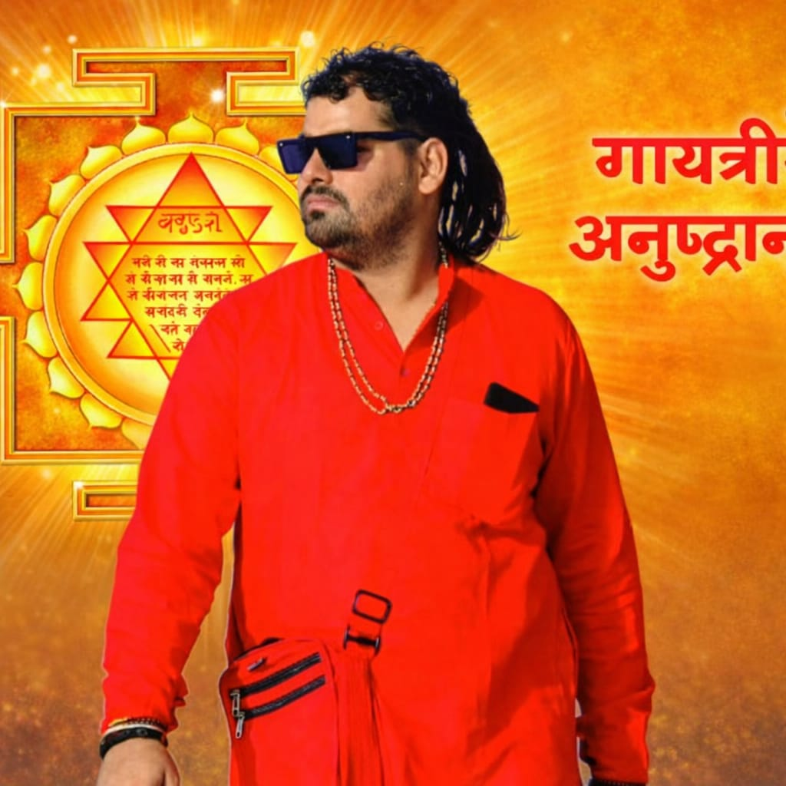
अनुष्ठान किसी भी मास में किया जा सकता है। तिथियों में पंचमी, एकादशी, पूर्णमासी शुभ मानी गई हैं। पंचमी को दुर्गा, एकादशी को सरस्वती, पूर्णमासी को लक्ष्मी तत्व की प्रधानता रहती है। शुक्ल पक्ष और कृष्ण पक्ष दोनों में से किसी का निषेध नहीं है, पर कृष्ण पक्ष की अपेक्षा शुक्ल पक्ष अधिक शुभ है ।। अनुष्ठान आरम्भ करते हुए नित्य गायत्री का आवाहन और अन्त करते हुए विसर्जन करना चाहिए। इस प्रतिष्ठा में भावना और निवेदन प्रधान है। श्रद्धा पूर्वक ‘भगवती’ जगज्जननी भक्त- वत्सला गायत्री यहाँ प्रतिष्ठित होने का अनुग्रह कीजिये। ऐसी प्रार्थना संस्कृत या मातृभाषा में करनी चाहिए और विश्वास करना चाहिए कि प्रार्थना को स्वीकार करके वे कृपापूर्वक पधार गई हैं। विसर्जन करते समय प्रार्थना करनी चाहिए कि ‘‘आदि शक्ति, भयहारिणाी, शक्तिदायिनी, तरणतारिणी मातृके ! अब विसर्जित हूजिये’’ इस भावना को संस्कृत या अपनी मातृ भाषा में कह सकते हैं। इस प्रार्थना के साथ- साथ यह विश्वास करना चाहिए कि प्रार्थना स्वीकृत करके वे विसर्जित हो गई हैं। कई ग्रन्थों में ऐसा उल्लेख मिलता है कि जप से दसवाँ भाग हवन, हवन से दसवाँ भाग तर्पण, तर्पण से दसवाँ भाग ब्राह्मण भोजन कराना चाहिए। यह नियम तन्त्रोक्त रीति से किये हुए पुरश्चरण के लिए है। इन पंक्तियों में वेदोक्त योग विधि की दक्षिण मार्गी साधना बताई जा रही है, इसके अनुसार तर्पण की आवश्यकता नहीं है। अनुष्ठान के अंत में १०८ आहुति का हवन तो कम से कम होना आवश्यक है, अधिक सामर्थ्य और सुविधा के अनुसार है। इसी प्रकार त्रिपदी गायत्री के लिए कम से कम तीन ब्राह्मणों का भोजन भी होना ही चाहिए। दान के लिए इस प्रकार की कोई मर्यादा नहीं बाँधी जा सकती। यह साधक की श्रद्धा का विषय है पर अंत में दान करना अवश्य चाहिए। किसी छोटी चौकी, चबूतरी या आसन पर फूलों का एक छोटा सुन्दर- सा आसन बनाना चाहिए और उस पर गायत्री की प्रतिष्ठा होने की भावना करनी चाहिए। साकार उपासना के समर्थक भगवती का कोई सुन्दर- सा चित्र अथवा प्रतिमा को उन फूलों पर स्थापित कर सकते हैं। निराकार के उपासक निराकार भगवती की शक्ति पुञ्ज का एक स्फुल्लिंग वहाँ प्रतिष्ठित होने की भावना कर सकते हैं। कोई- कोई साधक धूपबत्ती की, दीपक की अग्नि- शिखा में भगवती की चैतन्य ज्वाला का दर्शन करते हैं और उस दीपक या धूपबत्ती को फूलों पर प्रतिष्ठित करके अपनी आराध्य शक्ति की उपस्थिति अनुभव करते हैं। विसर्जन के समय प्रतिमा को हटाकर शयन करा देना चाहिए। पुष्पों को जलाशय या पवित्र स्थान में विसर्जित कर देना चाहिए। अधजली धूपबत्ती या रूईबत्ती को बुझाकर उसे भी पुष्पों के साथ विसर्जित कर देना चाहिए। दूसरे दिन जली हुई बत्ती का प्रयोग फिर न होना चाहिए। गायत्री पूजन के लिए पाँच वस्तुएं प्रधान रूप से मांगलिक मानी गई हैं। इन पूजा- पदार्थों में वह प्राण है, जो गायत्री के अनुकूल पड़ता है। इसलिए पुष्प- आसन पर प्रतिष्ठित गायत्री के सन्मुख धूप जलाना, दीपक स्थापित रखना, नैवेद्य चढ़ाना, चन्दन लगाना तथा अक्षतों की वृष्टि करनी चाहिए। अगर दीपक या धूप को गायत्री की स्थापना में रखा गया है तो उसके स्थान पर जल का अर्घ्य देकर पाँचवें पूजा- पदार्थ की पूर्ति करनी चाहिए। पूर्ववर्णित विधि से प्रातःकाल पूर्वाभिमुख होकर शुद्ध भूमि पर शुद्ध होकर कुश के आसन पर बैठे। जल का पात्र समीप रख लें धूप और दीपक जप के समय जलते रहने चाहिए बुझ जाय तो उस बत्ती को हटाकर नई बत्ती डाल कर पुनः जलाना चाहिए। दीपक या उसमें पड़े हुए घृत को हटाने की आवश्यकता नहीं है। पुष्प आसन पर गायत्री की प्रतिष्ठा और पूजा के अनन्तर जप प्रारम्भ कर देना चाहिए। नित्य यही क्रम रहे। प्रतिष्ठा और पूजा अनुष्ठान- काल में नित्य होते रहने चाहिए। जप के समय मन को श्रद्धान्वित रखना चाहिए, स्थिर बनना चाहिए। मन चारों ओर न दौड़े इसलिए पूर्ववर्णित ध्यान- भावना के अनुसार गायत्री का ध्यान करते हुए जप करना चाहिए। साधना के इस आवश्यक अंग- ध्यान में- मन लगा देने से वह एक कार्य में उलझा रहता है और जगह- जगह नहीं भागता। भागे तो उसे रोक- रोककर बार- बार ध्यान- भावना पर लगाना चाहिए। इस विधि से एकाग्रता की दिन- दिन वृद्धि होती चलती है। सवालक्ष जप को चालीस दिन में पूरा करने का क्रम पूर्वकाल से चला आता है, पर निर्बल अथवा कम समय तक साधना कर सकने वाले साधक उसे दो मास में भी समाप्त कर सकते हैं। प्रतिदिन जप की संख्या बराबर होनी चाहिए, किसी दिन ज्यादा, किसी दिन कम ऐसा क्रम ठीक नहीं। यदि चालीस दिन में अनुष्ठान पूरा करना हो तो १,२५,०००/४० =३, १२५ मन्त्र नित्य जपने चाहिए। माला में १०८ दाने होते हैं, इतने मन्त्रों की ३१२५/१०८=२९ इस प्रकार उन्तीस मालायें नित्य जपनी चाहिए। यदि दो मास में जप करना हो तो १,२५,०००/६० = २०८० मन्त्र प्रतिदिन जपने चाहिए। इन मंत्रों की मालायें २०८०/१०८=२०मालायें प्रतिदिन जपनी चाहिए। माला की गिनती याद रखने के लिए खड़िया मिट्टी को गङ्गाजल में सानकर छोटी- छोटी गोली बना लेनी चाहिए और एक माला जपने पर १ गोली एक स्थान से दूसरे स्थान पर रख देनी चाहिए। इस प्रकार जब सब गोलियाँ इधर से उधर हो जायें तो जप समाप्त कर देना चाहिए। इस क्रम से जप संख्या में भूल नहीं पड़ती। अनुष्ठान के दिनों में ब्रह्मचर्य से रहना आवश्यक है सिर के बाल नहीं काटने चाहिए। ठोड़ी की हजामत अपने हाथ ही बनानी चाहिए। चारपाई या पलंग का त्याग करके चटाई या तख्त पर सोना चाहिए। उनकी कठोरता कम करने के लिए ऊपर गद्दे बिछाये जा सकते हैं। आहार विहार सात्विक रहना चाहिए। मद्य मांस तो पूर्ण रूप से त्याग देना उचित है। अन्य नशीली, बासी, बुरी, गरिष्ठ, चटपटी, तामसिक, उष्ण उत्तेजक वस्तुओं से बचने का यथा सम्भव प्रयत्न करना चाहिए। कुविचार, कुकर्म, विलासिता, अनीति आदि बुराइयों से वैसे तो सदा ही बचना चाहिए पर अनुष्ठान काल में इनका विशेष ध्यान रखना चाहिए ।। जनन या मृत्यु क सूतक हो जाने पर सूतक निवृत्ति तक अनुष्ठान स्थगित रखना चाहिए। शुद्धि होने पर उसी संख्या से आरम्भ किया जा सकता है जहां से बन्द किया था। इस विशेष काल के प्रायश्चित के लिए एक हजार मन्त्र विशेष रूप से जपने चाहिए। अनुष्ठान काल में अपने शरीर और वस्त्रों का दूसरों से जहाँ तक हो सके कम ही स्पर्श होने देना चाहिए। उस अवधि में एक समय अन्नाहार दूसरे समय फल या दूध लेकर अर्द्धउपवास का क्रम चल सके तो बहुत उत्तम है। इनके अतिरिक्त उन नियमों को भी पालन करना चाहिए जो दैनिक सर्व सुलभ साधनाओं के प्रकरण में लिखे गये हैं। अनुष्ठान के आरम्भ में पूजन करना चाहिए। शीशे में मढ़ी हुई गायत्री की तस्वीर या प्रतिमा को सामने रख कर धूप, दीप, नैवेद्य, चन्दन, अक्षत, पुष्प, जल आदि मांगलिक पदार्थों से पूजा करनी चाहिए। पूजा से पूर्व आह्वान मन्त्र पढ़ना चाहिए और प्रतिदिन जप समाप्त करते समय विसर्जन मन्त्र पढ़ना चाहिए। दोनों मन्त्र निम्न प्रकार हैं- गायत्री का आह्वान मन्त्र- आयातु वरदा देवी अक्षरं ब्रह्म वादिनी ।। गायत्री छन्दसां माता ब्रह्मयोने नमोस्तुते ॥ गायत्री विसर्जन का मन्त्र- उत्तमे शिखरे देवि भूम्यां पर्वतमूधर्नि ।। ब्राह्मणेभ्योह्यनुज्ञातं गच्छदेवि यथासुखम् ॥ अनुष्ठान का पथ- प्रदर्शक एवं संरक्षक किसी आचार्य को ब्रह्मा रूप में वरण करना चाहिए। अनुष्ठान भी एक यज्ञ है। यज्ञ में पुरोहित या ब्रह्मा न हो तो वह निष्फल होता है। इसी प्रकार अनुष्ठान का पुरोहित या ब्रह्मा नियुक्त करना आवश्यक है। यदि वरण किया हुआ ब्रह्मा नित्य उपस्थित न हो सके तो उसके चित्र की अथवा उसका प्रतिनिधि मान कर स्थापित किए हुए नारियल की पूजा करनी चाहिए। गायत्री तथा ब्रह्मा रूपी आध्यात्मिक माता पिताओं का पूजन करने के उपरान्त ब्रह्म संध्या के पाँच कोष (आचमन, शिखा बन्धन, प्राणायाम, अघमर्षण, न्यास) करके जप आरम्भ कर देना चाहिए। जप के अन्त में आरती करनी चाहिए और बची हुई पूजा सामग्री को कि सी पवित्र स्थान में तथा जल को सूर्य की ओर विसर्जित कर देना चाहिए। यदि प्रातः सायं दो बार में अनुष्ठान करना हो तो प्रातःकाल के लिए अधिक संख्या मे और सायं काल के लिए उससे कम जप रखना चाहिए। दोनों ही बार पूजन संध्या के उपरान्त जप होना चाहिए। कई ग्रन्थों में ऐसा उल्लेख है कि शापमोचन, कवच, कीलक, अर्गल, मुद्रा के साथ जप करना और जप से दसवां भाग हवन, हवन से दसवां भाग तर्पण, तर्पण से दसवाँ भाग ब्राह्मण भोजन कराना चाहिए। यह नियम तन्त्रोक्त रीति से किये हुए गायत्री पुरश्चरण के लिए है। इन पंक्तियों में वेदोक्त योग विधि से दक्षिण मार्गी साधना बताई जा रही है। इसमें अन्य विधियों की आवश्यकता तो नहीं है, पर हवन और दान आवश्यक है। अनुष्ठान के अंत में १०८ आहुतियों का हवन अवश्य करना चाहिए, तदनन्तर शक्ति के अनुसार दान और ब्रह्मभोज करना चाहिए। ब्रह्मभोज उन्हीं ब्राह्मणों को कराना चाहिए जो वास्तव में ब्राह्मण हैं, वास्तव में ब्रह्म- परायण हैं। कुपात्रों को दिया हुआ दान और कराया हुआ भोजन निष्फल जाता है, इसलिए निकटस्थ या दूरस्थ सच्चे ब्राह्मणों को ही भोजन कराना चाहिए। हवन की विधि नीचे लिखते हैं-
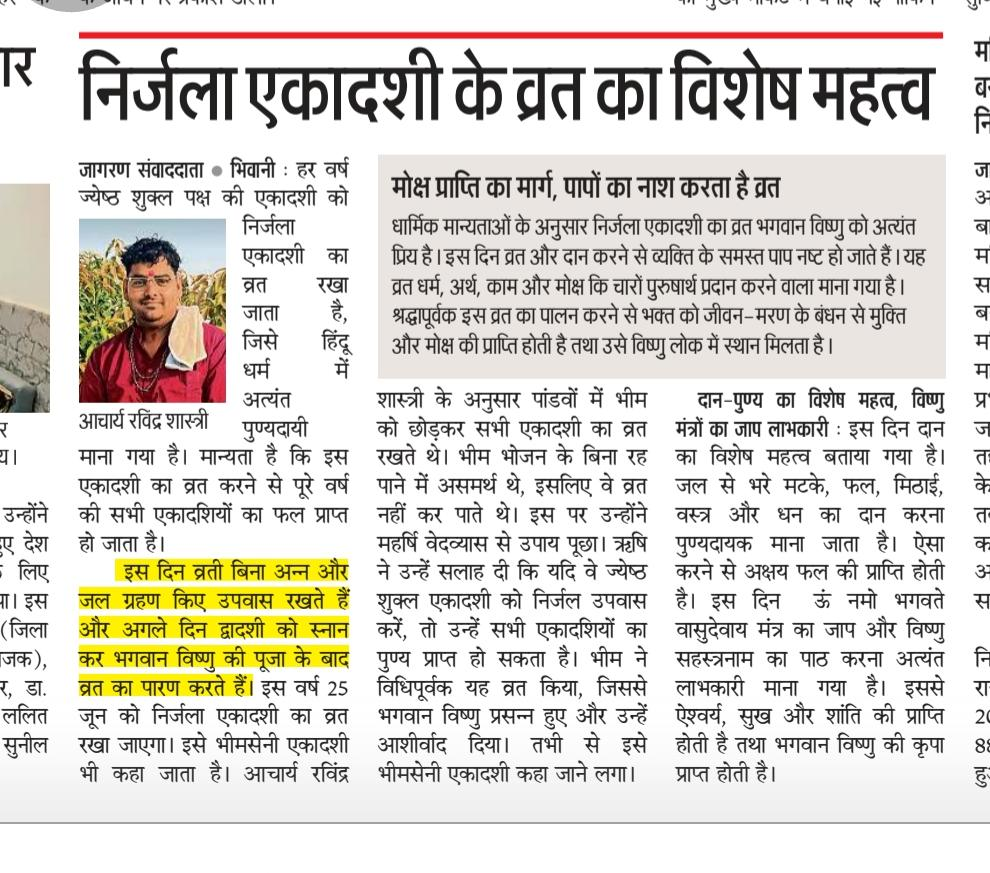
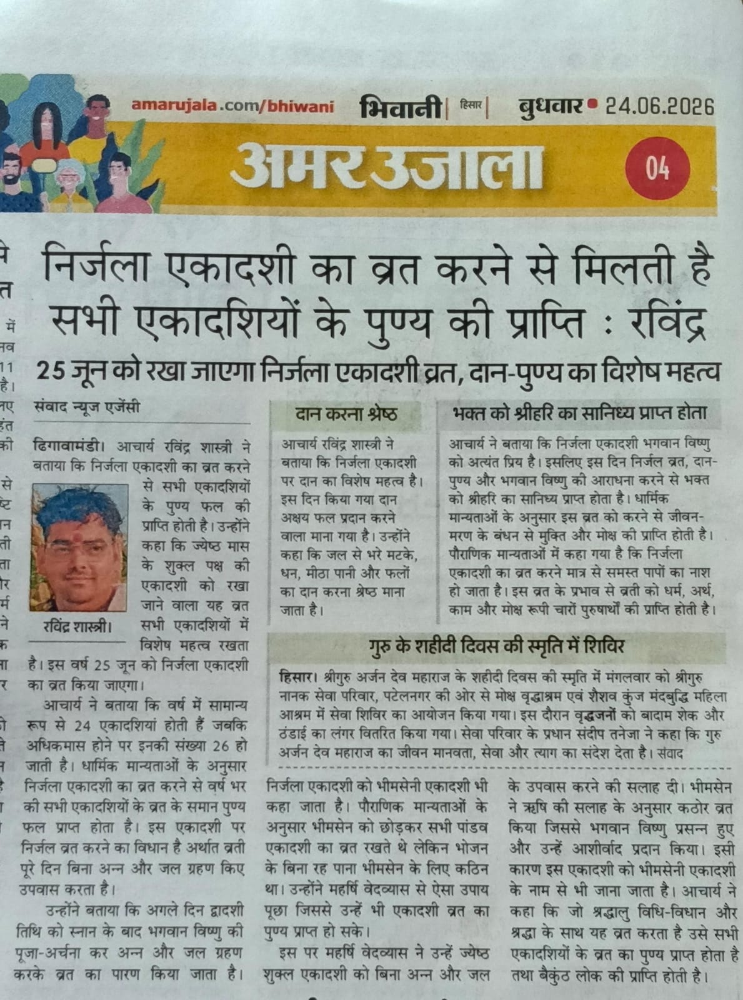
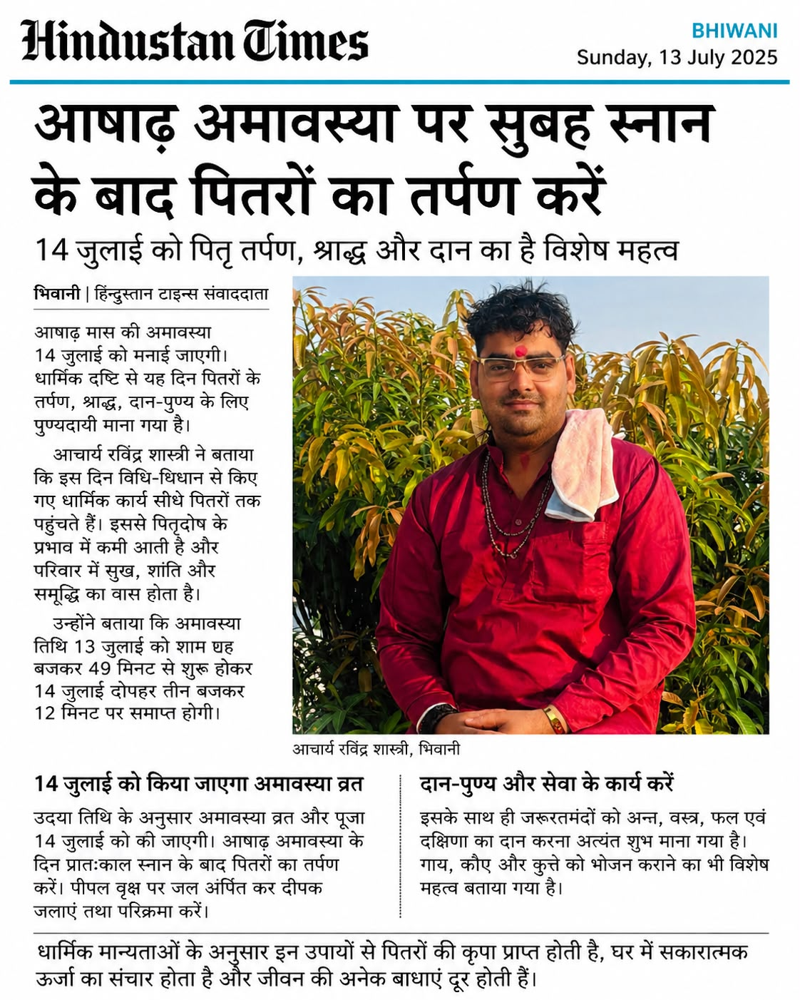